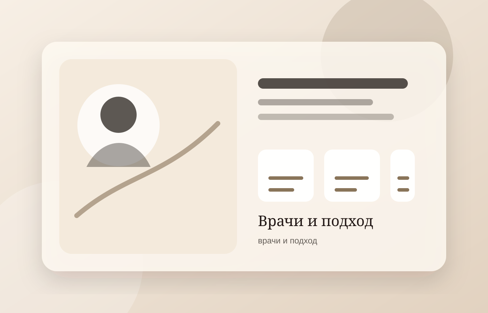
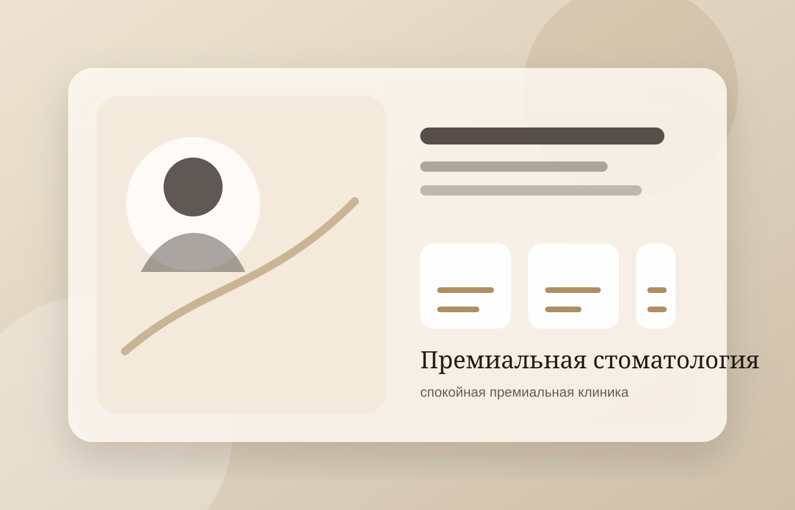
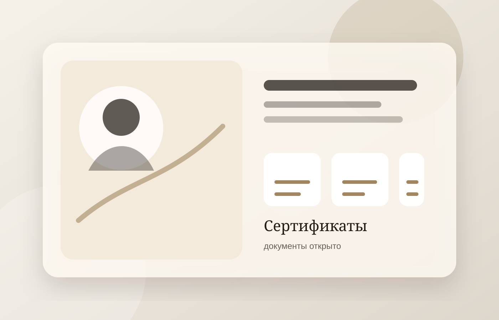
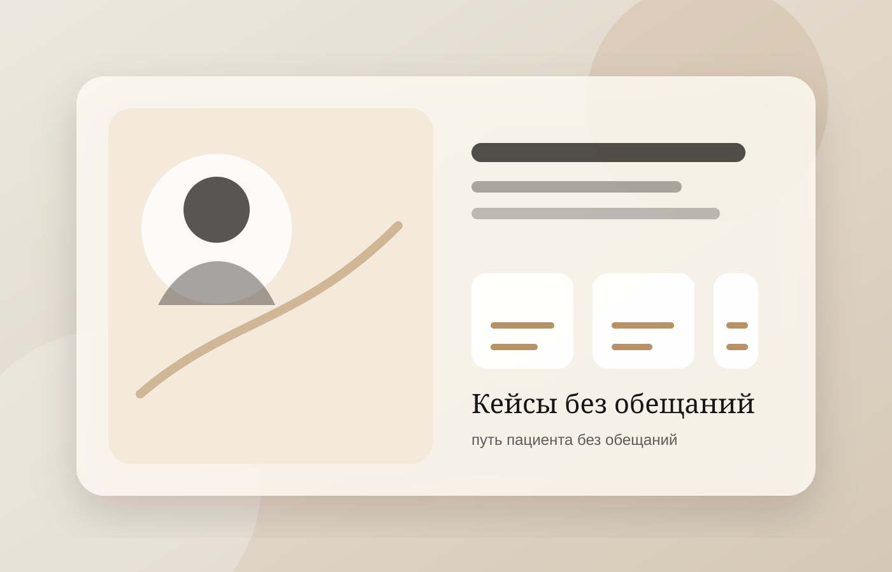

Врачи
Профили специалистов, подход, опыт, коммуникация перед лечением.
Премиальная стоматология для имплантации и виниров: реальные врачи, честные документы, аккуратные кейсы и спокойная запись через Telegram.
Мы не ставим диагноз онлайн и не обещаем медицинский результат. Первый шаг — консультация и план лечения.


Профили специалистов, подход, опыт, коммуникация перед лечением.

Подтверждаем статус клиники реальными документами, без декоративной имитации доверия.

Истории лечения с контекстом, согласием и без гарантии результата.
В Telegram мы уточним цель обращения, не ставим диагноз онлайн, предупредим о консультации врача и поможем согласовать удобное время без хранения медицинских данных.
Выберите удобный формат первого шага: консультация у врача, вопрос в Telegram или знакомство с врачами и документами клиники.